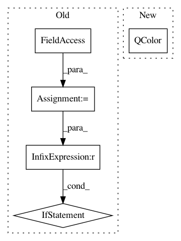

b71894ecb9c6beb4c4b1b6c546bc4f9c79f35aaf,ilastik/applets/pixelClassification/pixelClassificationGui.py,PixelClassificationGui,getNextPmapColor,#PixelClassificationGui#,504
Before Change
Return a QColor to use for the next label.
numLabels = self.labelListData.rowCount()
pmapColors = self.topLevelOperatorView.PmapColors.value
if numLabels < len(pmapColors):
return QColor( *pmapColors[numLabels] )
else:
return super( PixelClassificationGui, self ).getNextLabelColor()
def onPmapColorChanged(self):
super( PixelClassificationGui, self ).onPmapColorChanged()
f = lambda l: (l.pmapColor().red(), l.pmapColor().green(), l.pmapColor().blue())
pmapColors = map( f, self.labelListData )
After Change
super(PixelClassificationGui, self).getNextLabelColor)))
def getNextPmapColor(self):
return QColor(*(self._getNext(self.topLevelOperatorView.PmapColors,
super(PixelClassificationGui, self).getNextPmapColor)))
def onLabelNameChanged(self):
self._onLabelChanged(super(PixelClassificationGui, self).onLabelNameChanged,
lambda l: l.name,
In pattern: SUPERPATTERN
Frequency: 3
Non-data size: 5
Instances
Project Name: ilastik/ilastik
Commit Name: b71894ecb9c6beb4c4b1b6c546bc4f9c79f35aaf
Time: 2013-02-06
Author: kemal.eren@iwr.uni-heidelberg.de
File Name: ilastik/applets/pixelClassification/pixelClassificationGui.py
Class Name: PixelClassificationGui
Method Name: getNextPmapColor
Project Name: ilastik/ilastik
Commit Name: b71894ecb9c6beb4c4b1b6c546bc4f9c79f35aaf
Time: 2013-02-06
Author: kemal.eren@iwr.uni-heidelberg.de
File Name: ilastik/applets/pixelClassification/pixelClassificationGui.py
Class Name: PixelClassificationGui
Method Name: getNextLabelColor
Project Name: ilastik/ilastik
Commit Name: 6c331b84293bb6cf5dc5480037d69cc0ffb0c6fe
Time: 2013-09-18
Author: martin.schiegg@iwr.uni-heidelberg.de
File Name: ilastik/applets/thresholdTwoLevels/thresholdTwoLevelsGui.py
Class Name: ThresholdTwoLevelsGui
Method Name: setupLayers